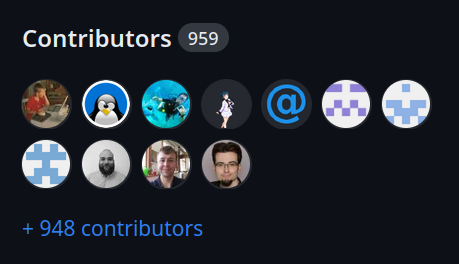
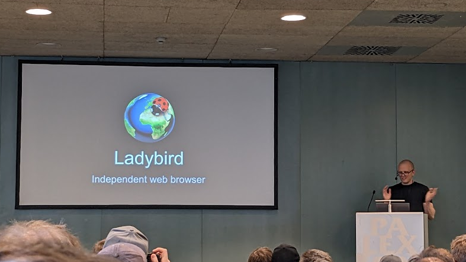
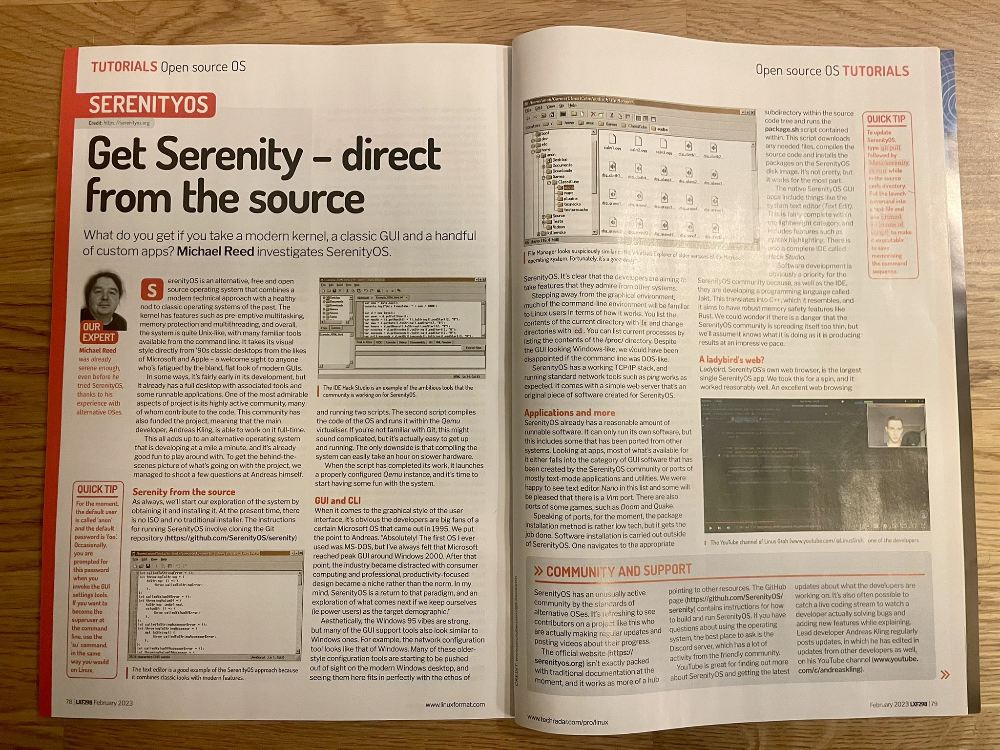
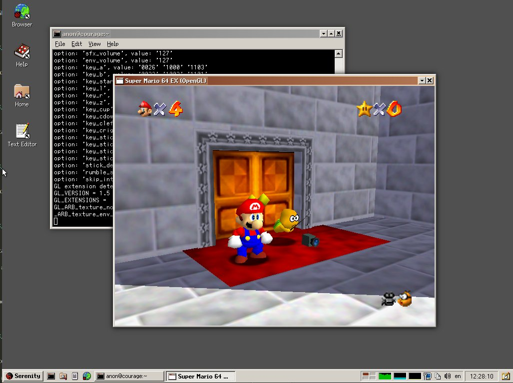

Well hello friends! Today we celebrate the 5th birthday of SerenityOS, marking half a decade of continuous development since the first commit to the repository, on October 10th, 2018.
What follows is a selection of random highlights from the past year, mixed with personal reflections from some of the SerenityOS developers.
Introduction to SerenityOS
SerenityOS is a from-scratch desktop operating system that combines a Unix-like core with the look & feel of 1990s productivity software.
The project scope goes all the way from kernel to web browser, and we aim to build everything in-house instead of relying on third-party libraries.
My name is Andreas Kling, and I started building this system after finishing a 3-month rehabilitation program for drug addiction in 2018. I found myself with a lot of time and nothing to spend it on. So I began building something I'd always wanted to build: my very own dream OS.
A lot has happened since then, and today SerenityOS is a bustling open source community with hundreds of developers from around the world.
Community growth
In the last year, 194 new people have made their first SerenityOS contribution. That puts us at 959 happy hackers since the start, according to GitHub. :^)
It continues to blow my mind that so many people have sat down to help out with this project, just because they wanted to.
Our Discord community has also grown by 1243 members, putting us at 8172 total.
The Ladybird web browser takes flight
Last year, we spun out our Ladybird web browser as a cross-platform application, no longer just confined to SerenityOS.
Since then, development has continued to accelerate, with dramatic progress. In June, I went to the Web Engines Hackfest in Spain and gave a presentation about Ladybird.
We've also received substantial funding for browser development, including a $100,000 sponsorship from Shopify, two anonymous $100,000 donations and a $10,000 sponsorship from ohne-makler.net.
This funding has allowed me to hire two full time developers to work on Ladybird with me: Alexander Kalenik and Andrew Kaster.
Developer reflections: Alexander Kalenik
The thing I love most about the project is the strong feeling of progress combined with the goal of building something I use daily: a web browser! I'm amazed by how much progress has been made since I joined the project almost a year ago in all areas including layout correctness, Web API support, and JS engine performance.
I would like to mention the initiative I helped to start, and I'm glad that others joined me, which is the testing of LibWeb. It feels so much better to move forward being less worried about breaking everything along the way. I hope to see even more focus on browser engine testing in the next year!
In the meantime, I am glad I can work on Ladybird full-time, solving problems that may not be novel but are still very exciting while building a browser engine!
SerenityOS in a real-life paper magazine!
UK magazine Linux Format ran a juicy 4-page spread about SerenityOS, where writer Michael Reed went on a deep dive into the system.
Even though we've been written about many times before, seeing a good old-fashioned computer magazine write about SerenityOS was great fun! I've been reading these since I was a kid, and now I even got to be in one! :^)
I posted the cover and photos of the pages inside on X.
Going 64-bit only
This year we removed the 32-bit x86 port, making SerenityOS a 64-bit only operating system!
As much as I love old-school x86, we've had x86_64 for more than 20 years, and it's time to move on. :^)
New media formats: VP9, WebP, JPEG, JPEG XL, TinyVG
This year, it's been particularly exciting to see support for more popular media formats be added to SerenityOS. In particular, we've seen some really great work by Gregory on VP9, Nico on WebP, Lucas on JPEG & JPEG XL, and Benjamin on TinyVG. For an online system, being able to decode media files is vital, and we've made amazing progress in 2023.
Super Mario 64 on SerenityOS
I played a lot of Super Mario 64 in elementary school, so it was extra delightful to see Jan get it running on top of SerenityOS's LibGL and SoftGPU rasterizer.
Unfortunately this game port has sketchy legal status, so it never made its way into our ports tree. But just the fact that it was possible still makes me smile. :^)
Developer reflections: Tim Schumacher
As someone who is perfectly fine with primarily working on the system's support libraries, I usually don't have many significant milestones to report on (or at least not any that are particularly visible).
However, in January of 2023, we finalized the migration of our I/O-related tools to a new error-aware and stackable datastream API after starting to actively work towards that two months earlier.
As a proof-of-concept, I implemented support for LZMA, LZMA2, and XZ decompression, all of which are now usable across the project. While I intended this to make SerenityOS more viable as a development host (running SerenityOS on itself in particular), code sharing also opened up the possibility of utilizing them elsewhere, whether when adding new features or improving old ones.
Here's to another year of steady under-the-hood improvements, wherever they come from, whatever they target, and whatever they may accidentally improve! :^)
Reconsidering how we handle userspace OOM
After spending over 2 years chasing after the dream of handling every little OOM (out of memory) error in SerenityOS, I finally had to admit that we'd made the codebase significantly uglier and less fun to work on, while never actually reaching any kind of tangible milestone.
We've now adjusted our course here and are no longer checking every tiny little malloc
except in the kernel and critical system services.
Personal reflections: Dániel Bertalan
To me, one of the highlights of this year was seeing many of our contributors get involved in other projects. Whether it means upstreaming support for SerenityOS, improving developer tooling or taking part in a standardization process, such a contribution has a chance to make a positive impact on the wider open-source ecosystem. To highlight a few examples:
Last November, Kenneth Myhra became a contributor to curl, the ubiquitous networking library, by submitting the patches we needed for building it for Serenity. Similarly, Andrew Kaster has been working on upstreaming our changes to build tools: starting with CMake 3.25 recognizes SerenityOS as a cross-compilation target, and now we are in the process of adding it to Clang as well.
Agni and Moormaster have also been active in the upstream Zig project and maintaining our port of it.
Thanks to Andrew's and kleines Filmröllchen's work, clangd will soon allow users to
specify whether automatically
#included headers are quoted in "" or <>,
which is a feature previously requested by other developers as well.
Personally, I have contributed a small feature to Qemu's Raspberry Pi emulation.
We have also been active in regularly testing development versions of our build tools, which allowed them to fix multiple issues early in the development phase.
Thanks to our philosophy of writing code as close to the spec as possible, we have found and reported multiple issues and ambiguities in web standards. It's no wonder that with his attention to detail, LibJS' emeritus lead developer, Linus Groh joined TC39 (the committee developing the JavaScript language) as an invited expert.
Thanks
To all the awesome folks who have participated in the last year, whether by hacking code, filing bugs, adding docs, drawing emojis, commenting on my videos, hanging out on Discord, telling your friends about SerenityOS, etc, thank you all!
I'm so incredibly grateful for all the love and support this project continues to receive!
And also, a massive thank you! to everyone who has supported me financially. Thanks to you, I'm able to work on this full time, and I'm super excited about the future of the project!
Andreas Kling, 2023-10-10